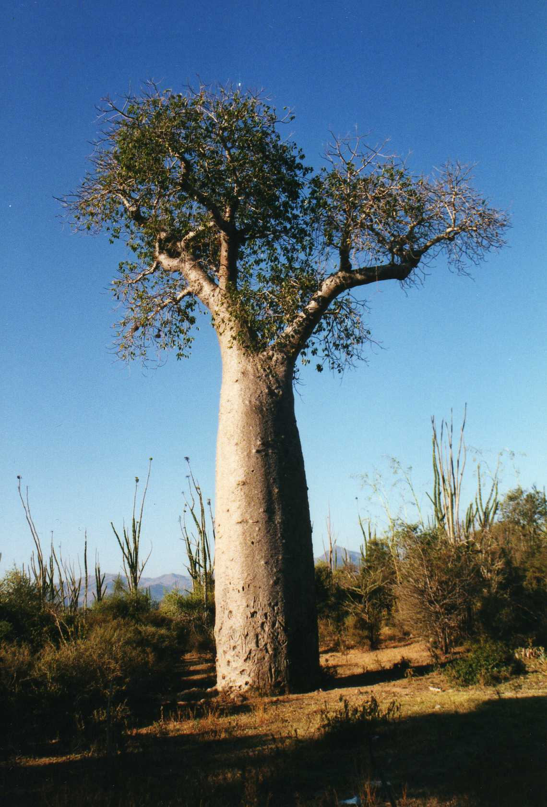

Willow
Ecology
The willow is a tree that mainly grows in the northern hemisphere , consisting of 400 different species of deciduous trees and bushes. A species of Willow known as the ‘Weeping Willow’ is the most interesting in the genus salix , being named after its droopy demeanor , reminscent of someone weeping. The name Willow has unknown origins , but it is theorized that the name of the genus Salix comes from ancient Celtic , meaning ‘near water’.
Uses and Facts
The willow tree has one of the most important functions of a tree. The bark has special medicinal properties , mainly its painkiller properties. The chemical that it contains in its bark , salicylate , can be turned into salicylic acid. The tree is very loosely connected to the creation of Aspirin , a well-known painkiller. Many of the trees parts are edible , such as the leaves , roots , and the inner layers of its bark.
Baobab
Ecology
The Baobab tree is a large deciduous tree in the genus Adansonia. They can be found in in Most of Africa and Australia. They can flower and usually have a very distinct scent and can be very large. The dry and hot habitat means that these flowers aren't very long lived , and will die after their use in the short reproductive phase of the tree. The tree's thick and wide trunk is used to store large amounts of water.
Uses and Facts
The trees drop very nutritious fruits and the leaves contain many nutrients as well. They are extremely fibrous and can have more calcium than milk and massive amounts of vitamin C comparable to oranges. It also contains a large amount of antioxidants, which can help prevent cancer by neutralizing carcinogens. The fruit can also only be produced if the flower is pollinated by a bat.
Ginkgo
Ecology
The Ginkgo tree is a tree that originates in China. It is part of the species Ginkgoales which has been around for 300 million years and is one of the last surviving members remaining. The name ‘Ginkgo’ is originally from Japanese but is misspelt in English and Chinese, meaning ‘Silver Apricot’.
Uses and Facts
The leaves of the ginkgo tree are one of the most unique and well recognized. They are shaped
similairly to a fan and turn to a beautiful shade of gold during Autumn. The large span of
time the Ginkgo tree has existed has created a very complex genome for it, sequencing finding
10 billion genes. There is ongoing research of if Ginkgo can prevent age-related ailments
and even aging.